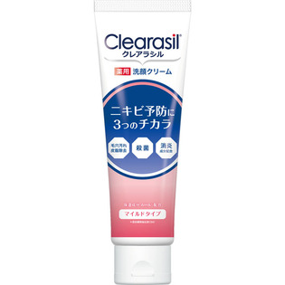

返回列表
产品名称：クレアラシル 薬用洗顔フォーム マイルドタイプ

レキットベンキーザー・ジャパン クレアラシル 薬用洗顔フォーム マイルドタイプ １２０ｇ（医薬部外品）
メーカー レキットベンキーザー・ジャパン
JANコード 4906156100228
商品の特徴
しっかりニキビ予防に3つのチカラ
1．殺菌
2．消炎成分
3．皮脂汚れ・皮脂除去
クリアな素肌へ
保湿成分AHA配合
成分・分量
精製水濃グリセリンミリスチン酸パルミチン酸水酸化Kステアリン酸ヤシ油脂肪酸アミドプロピルベタイン液ジグリセリン親油型ステアリン酸グリセリルティーツリーオイルオウバクエキスカモミラエキス（１）混合植物抽出液（３４）BG
用法及び用量
適量（約２ＣＭ）を水またはぬるま湯でたっぷり泡立ててから洗顔し、その後十分にすすいでください。